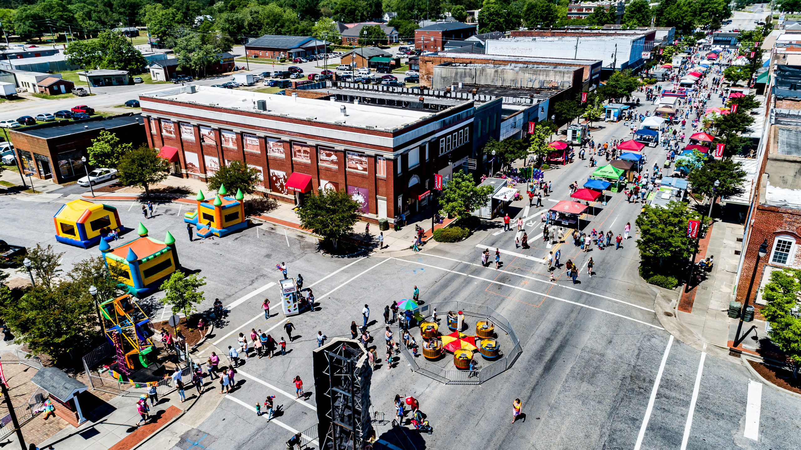

My name is Jeremiah Louis-Pierre. I'm 20 years old, and I'm an aspiring developer that's constantly trying to improve not only through programming, but also academically.

I was born in New Brunswick, New Jersey. Then when I turned about 2 years old, was then raised in Philadelphia, Pennsylvania, but this
lasted up until I turned 12.
At this point, I then resided in Dillon, South Carolina until I turned 14. Finally, due to my mother wanting to move once again, I've been living in Fayetteville, North Carolina since then.
I am currently studying Engineering here at FTCC, with the plan to transfer to NC State University with the declared major of Computer Science.
I've honestly always had a small amount of hobbies, but a lot of time is spent on each hobby. Growing up, my hobbies consisted of riding bikes, and playing video games.
Nowadays, my hobbies consists of programming, reading something programming related, and sometimes watching anime.
Please feel free to learn more about me via links below!